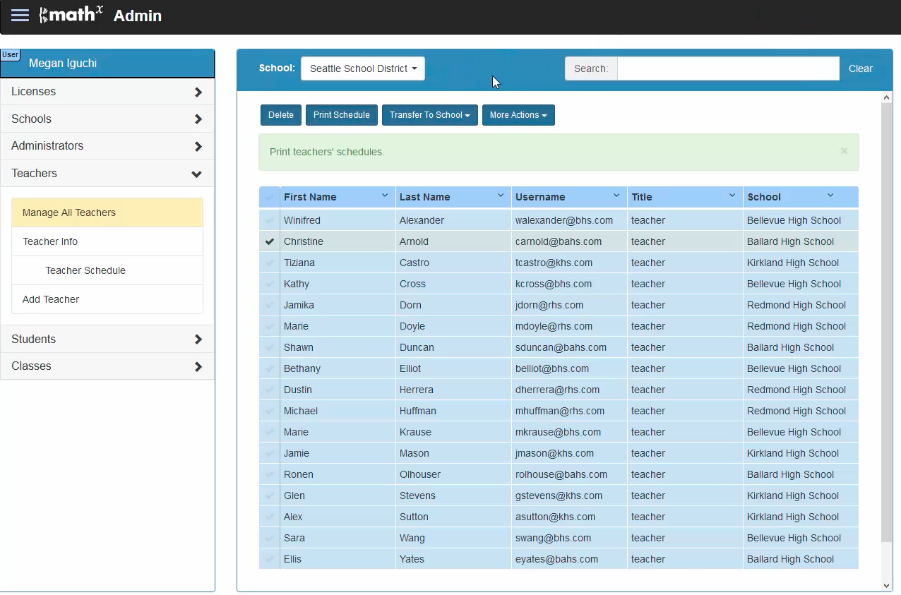

Admin / Learning Management System (LMS)
At the Seattle branch of Perfection Learning, a digital education start-up focusing on high school math and science online homework products for teachers and students, the administration system, or learning management system (LMS), for teachers had aged out. The main purpose of the LMS was to distribute the product to students, and manage student users, classes, schools, and districts. In addition, the administration system was built for one admin user-level, teachers, when in practice we needed to incorporate multiple admin user-levels.
How might we update our LMS for administrators and teachers to manage students, classes, staff, and products?
Role
user experience designer (UX), product design, product manager
Tools
Sketch, Axure, InDesign, Illustrator, pencil and paper
Responsibilities
users at-a-glance
object mapping
sketches
information architecture and user flows
prototype
usability testing
validation guide for all input fields
backlog grooming
Requirements
Use existing navigation scheme put in place by previous developer
Scale—accommodate hundreds of thousands of users
Flexible UI that can work with different user-levels and fit each user’s task flows
Incorporate various administration levels, including district administators, school administrators, teachers, and customer service
Users At-A-Glance

Administrators
- District coach or department chair who is setting up math program for staff and students. Low technology level.
- District or school IT who will set up accounts and manage the LMS for all students and staff in district or school, but will not use any other parts of the product. Often required to reset passwords for students who do not remember their passwords.

Teachers
- Teacher who has independently purchased the product and needs to set it up for four classes. Low technology level with very few computers in classroom.
- District IT set up the product, but the teacher needs to update the class information because a student has transferred out of the class.
Object Mapping
When I was first given this project, I set out to answer several questions:
- What are the objects that are needed in the system, or in other words, what and who are we managing?
- Which actions need to be performed on objects by each user-level?
- What information does each user-level need about each object?
After gathering user requirements from marketing and completing a competitive analysis, I mapped the objects in the system to the actions needed and information that could be displayed. This helped me to make sense of what objects were needed in the system.
Sketches
At the beginning of the project, it was one developer and I working within a short timeframe to set up the foundation for the rest of the project. Because of this, we used a lean framework to develop the admin system. The prior design was oriented around having one screen per task. This made for a large information architecture and forced the user to learn each individual screen when completing a task. Because many of our user base was not tech savvy, I wanted to focus our design on simple containers that were consistent between all tasks. We determined the best way to display thousands of objects would be in table form, with the ability to select an object from the table and perform an action on the item. The actions would be available as buttons at the top of the table. We agreed that the only action that this pattern would not incorporate is editing the object. Editing would take place in a separate form. Clicking the object within the table would take the user to an editable form. Since editing would take place in a form, we were able to separate what we needed to display to the user, but allow for more information to be stored on each object. In other words, the amount of information in the table form would not limit the information about the object. This would also allow for flexibility in the amount of columns we could display in the table.
Some initial sketches are shown below. Note: I like to sketch multiple ideas on a page so that I can save the trees.


Information Architecture and User Flows
Using the tables and forms we had sketched and the object mapping exercise, I created an architecture that could be used for all user-levels. District users were defined as district coaches, district leaders, and instructional technology specialists and were given the highest level of permissions. School users incorporated principals, vice principals, department heads, and school IT. The teacher user was a teacher within a school and had the lowest level of permissions. I mapped out each of the user flows on top of the IA to determine if the proposed IA would work for all users.
Prototype, Usability Testing, and Iterating
The developer I was working with had been working in parallel on the tables, forms, and backend while I ironed out the information architecture. We were able to create a high function prototype to test on users to validate our assumptions thus far.
- 
Due to the research, we identified school IT personnel as our target users. Within schools, this role has the responsibility of setting up products for all of the teachers and students within a school. Users were given tasks such as:
- You have created a class called “English Period 4.” Given a list of students, add students to the class.
- It is the beginning of the school year and you are prepping for beginning of the year meetings. First up on the agenda is distributing the classes and students in those classes to teachers. Print off the materials to give each teacher the list of students in each class so that they can start preparing.
- A parent calls in and explains that the information for her son, Harry Miller, is wrong. There is a typo in his last name. In addition, he can’t login to access his homework. When he tries to login to the system she gets a message saying “Incorrect username or password.” Attempt to help her resolve both issues.
Because of usability testing and our impending deadline, we narrowed our sitemap. Usability feedback led to a revision in navigation to tables within tables. The amount of actions available to each user was trimmed due to time.
Validation Guide
For all of the forms and text fields in administration (and throughout the rest of the product), I developed a set of validation errors and notifications. The validation guide was built in Axure, so that the popups and errors could be viewed by the developers who would be implementing the rules.
Successes and Learnings
At the onset of the project, I faced pushback from stakeholders on reorganizing the information architecture of the admin system. There was hesitation to reorganize the existing 20+ pages that were deemed necessary to have a functioning admin system. I was able to align all stakeholders once they understood that the same amount of functions, and more, were possible within 12 pages of content using two main containers. For example, our former system allowed a user to reset a student password four pages deep into the userflow, while our new system allows users to reset a student’s password on the first page.
While I designed for the future functionality for district and teacher users, as was requested, the scope of the project was outside the timeframe my team faced. I learned my lesson in narrowing focus based on the size of my team. Throughout the project, I communicated with developers and testers to discuss the feasibility and details of each of the features within the admin system. Because of the team working together to trim and create the product, we were able to release on time.